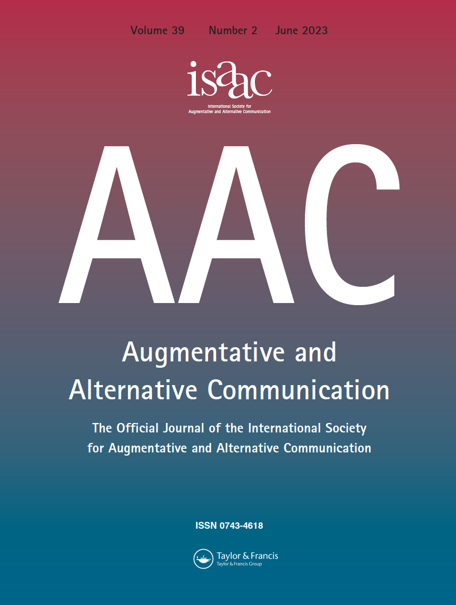
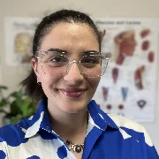
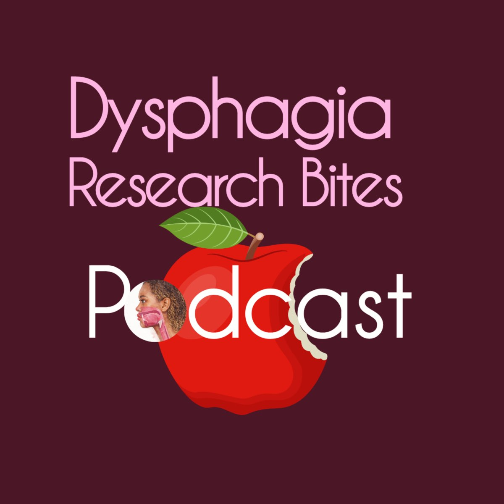
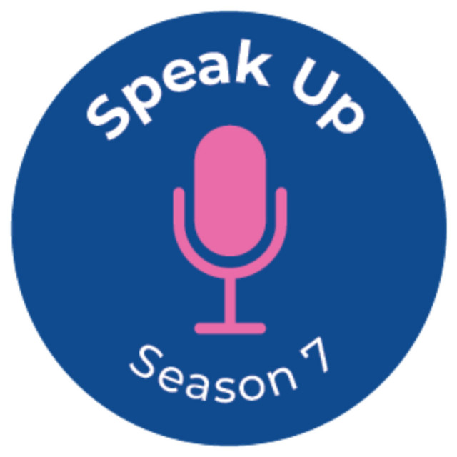

Dr Lillian Krikheli, PhD
Speech pathologist and researcher
About
I’m a clinician-researcher based in Melbourne. My work focusses on swallowing, voice and progressive neurological diseases.
At La Trobe University I conduct and lead research, as well as teach Bachelor and Master of Speech Pathology students about laryngology. I feel very lucky to do what I do. As part of my role, I contribute to many external committees and professional activities.
Unaffiliated with my academic role, I maintain a clinical appointment as Principal Speech Pathologist at Swallow Science Melbourne.
Research
- Research outputs
- 41
- Citations
- 499
- h-index
- 8
- FWCI (mean)
- 2.03
Outputs: La Trobe (includes conference outputs).
Citations and h-index: Google Scholar.
FWCI: SciVal, 14 indexed outputs; selected range 1996–2027.
Checked 3 November 2026.
Most recently published
Recent publications
- It’s not just “press record”: a viewpoint for providing ethical voice banking
- Issues in the clinical assessment and management of people living with motor neurone disease (MND): a survey of Australian healthcare professionals
- Speech-Language Pathologists in Paediatric Palliative Care: Case Studies and Interventions
- Speech-Language Pathologists and Paediatric Palliative Care
Media and Engagements
Meet Dr Lillian Krikheli: The FightMND All Star helping improve MND care
2 November 2026 · FightMND
The picks are in: FightMND announces its grants for 2026
25 October 2026 · FightMND
Meet the 2026 FightMND All Stars
2026 · FightMND
See moreSee less
Worried about feeding your baby solid foods? Here’s what you should know
15 April 2026 · The Conversation
The Wisdom of Doubt — Path Connect with Dr Lillian Krikheli
LinkedIn · Laura Maguire
Inspiring the next healthcare generation
May 2026 · St Michael’s Grammar School · Instagram
Simulated clinical experiences
14 July 2022 · La Trobe University
Speech pathology in paediatric palliative care – where are we now?
13 December 2021 · Flinders University
2011 nominations and recipients
2011 · Music Theatre Guild of Victoria
Recorded talks
Invitations to speak include:

Eating and drinking with acknowledged risk
A panel discussion about choices, quality of life and care when eating and drinking carry risks. This is sometimes called “risk feeding”.

Building your voice banking toolkit
With Dr Sarah El-Wahsh, discussing voice preservation, choosing software and developments in voice banking.

Recommendations for Speech-Language Pathologists in Paediatric Palliative Care Teams
Findings from an international project exploring speech pathology practice in paediatric palliative care and developing preliminary best practice recommendations.
Resources
Professional community
Voice Banking Community of Practice
An international, multidisciplinary community for knowledge exchange, webinars, demonstrations and discussions about voice banking.
Community information & how to join (PDF) ↗